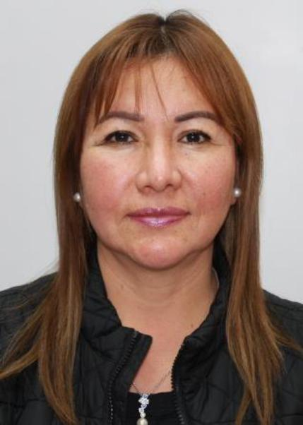
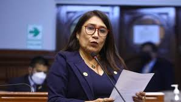
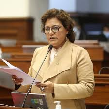
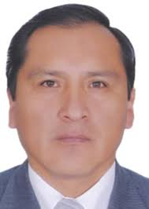
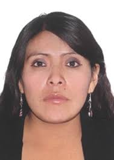
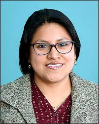
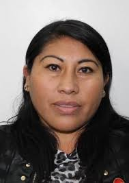
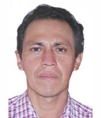

| N° | Nombres | Partido Político | Foto | CV (Referencial) |
|---|---|---|---|---|
| 1 | ALEJANDRO ENRIQUE CAVERO ALVA | Avanza País | |
Economista |
| 2 | ADRIANA MARCELA TUDELA GUTIÉRREZ | Avanza País | |
Abogada |
| 3 | DIANA GONZALES DELGADO | Avanza País | Administradora | |
| 4 | JOSÉ LUIS GIL BECERRA | Avanza País | Ex PNP / Analista | |
| 5 | FERNANDO GIOVANNI URBINA LARA | Avanza País | |
Abogado Constitucionalista |
| 6 | VERÓNICA ESCOBAL ORDOÑEZ | Avanza País |  |
Gestión Pública |
| 7 | LUIS ALBERTO ARRIOLA TUEROS | Avanza País | |
Administrador |
| 8 | JOSÉ MANUEL ELICE NAVARRO | Avanza País | |
Abogado / Ex Ministro |
| 9 | PATRICIA ROSA JUÁREZ GALLEGOS | Avanza País | |
Abogada |
| 10 | CARLO MAGNO SALCEDO CUADROS | Avanza País | |
Abogado / Politólogo |
| 11 | MARÍA DEL CARMEN ALVA PRIETO | Avanza País | Abogada | |
| 12 | ROSSANGELA BARBARÁN REYES | Avanza País | |
Administradora |
| 13 | EDWIN MARTÍNEZ TALAVERA | Avanza País | |
Gestión Municipal |
| 14 | HILDA PORTERO LÓPEZ | Avanza País |  |
Servicio Social |
| 15 | SILVIA MONTEZA FACHIN | Avanza País |  |
Administradora |
| 16 | KAROL PAREDES FONSECA | Avanza País | |
Educadora |
| 17 | WILSON SOTO PALACIOS | Avanza País | |
Abogado |
| 18 | ELVA EDITH JULÓN IRIGOÍN | Avanza País | Administradora | |
| 19 | SEGUNDO QUIROZ BARBOZA | Avanza País | |
Docente |
| 20 | KELLY PORTALATINO ÁVALOS | Avanza País | Médico Cirujano | |
| 21 | AMÉRICO GONZA CASTILLO | Avanza País | |
Abogado |
| 22 | MARÍA AGÜERO GUTIÉRREZ | Avanza País | |
Empresaria |
| 23 | FLAVIO CRUZ MAMANI | Avanza País |  |
Abogado / Docente |
| 24 | WALDEMAR CERRÓN ROJAS | Avanza País | Doctor en Educación | |
| 25 | MARGOT PALACIOS HUAMÁN | Avanza País |  |
Relacionista Pública |
| 26 | ISAAC MITA ALANOCA | Avanza País | |
Abogado |
| 27 | JANET RIVAS CHACÓN | Avanza País |  |
Abogada |
| 28 | MARÍA TAYPE CORONADO | Avanza País |  |
Abogada |
| 29 | SEGUNDO MONTALVO CUBAS | Avanza País |  |
Técnico Jurídico |
| 30 | ABEL REYES CAM | Avanza País | |
Arquitecto |
| 31 | GUIDO BELLIDO UGARTE | Avanza País | |
Ingeniero |
| 32 | GUILLERMO BERMEJO ROJAS | Avanza País | Político |